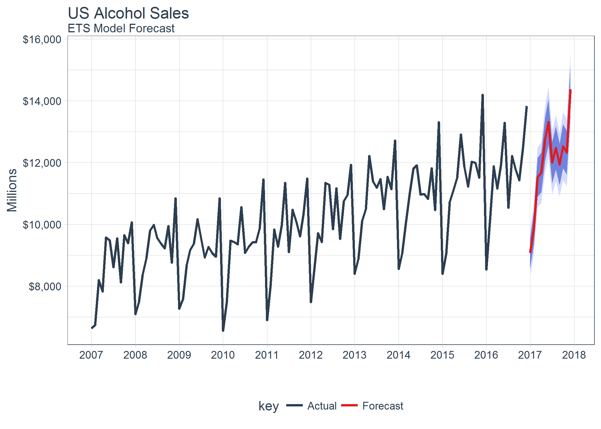
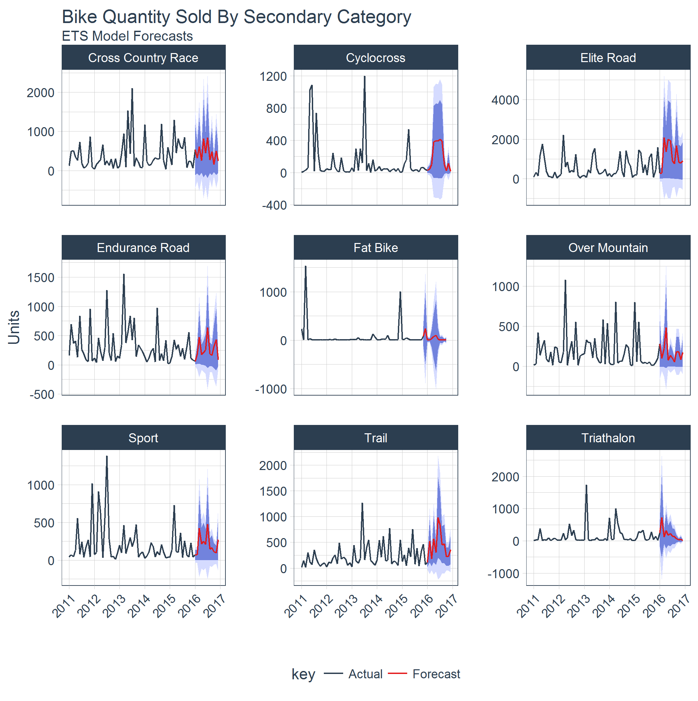
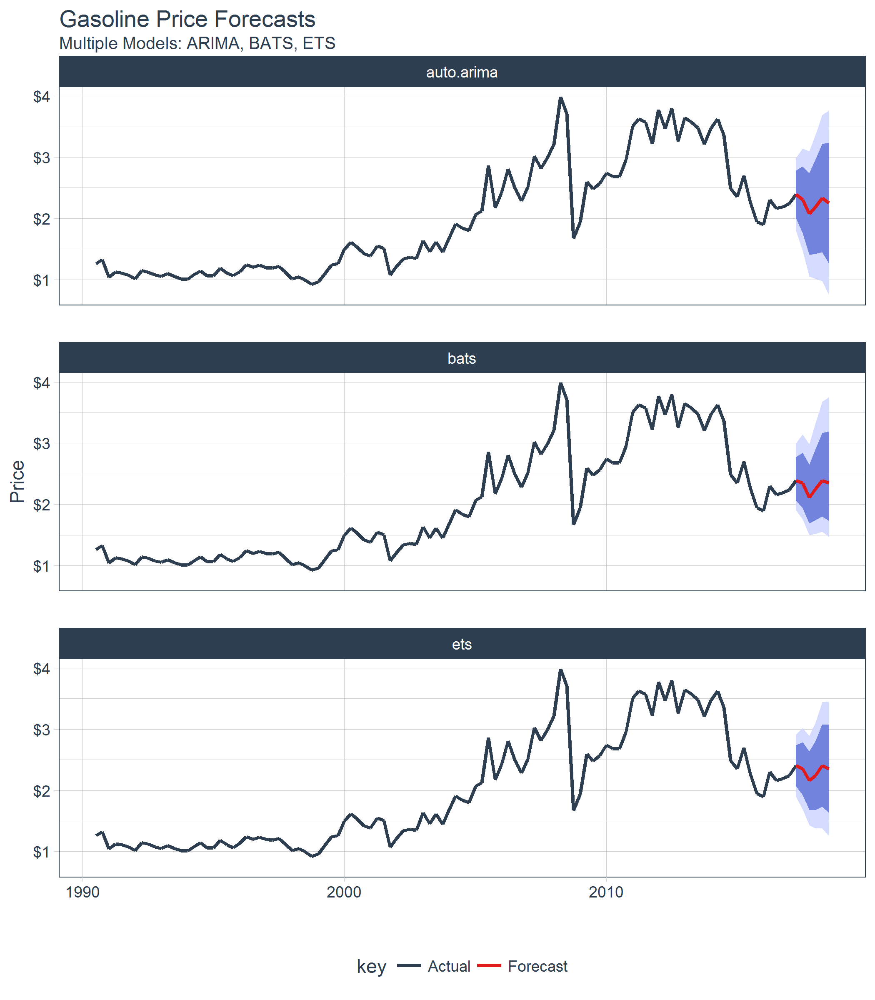

Extending
broomto time series forecasting
The sweep package extends the broom tools (tidy, glance, and augment) for performing forecasts and time series analysis in the “tidyverse”. The package is geared towards “tidying” the forecast workflow used with Rob Hyndman’s forecast package.
Benefits
- Designed for modeling and scaling forecasts using the the
tidyversetools in R for Data Science - Extends
broomfor model analysis (ARIMA, ETS, BATS, etc) - Tidies the
forecastobjects for easy plotting and “tidy” data manipulation - Integrates
timetkto enable dates and datetimes (irregular time series) in the tidied forecast output
Tools
The package contains the following elements:
model tidiers:
sw_tidy,sw_glance,sw_augment,sw_tidy_decompfunctions extendtidy,glance, andaugmentfrom thebroompackage specifically for models (ets(),Arima(),bats(), etc) used for forecasting.forecast tidier:
sw_sweepconverts aforecastobject to a tibble that can be easily manipulated in the “tidyverse”.
Making forecasts in the tidyverse
sweep enables converting a forecast object to tibble. The result is ability to use dplyr, tidyr, and ggplot natively to manipulate, analyze and visualize forecasts.

Forecasting multiple time series groups at scale
Often forecasts are required on grouped data to analyse trends in sub-categories. The good news is scaling from one time series to many is easy with the various sw_ functions in combination with dplyr and purrr.

Forecasting multiple models for accuracy
A common goal in forecasting is to compare different forecast models against each other. sweep helps in this area as well.

broom extensions for forecasting
If you are familiar with broom, you know how useful it is for retrieving “tidy” format model components. sweep extends this benefit to the forecast package workflow with the following functions:
-
sw_tidy: Returns model coefficients (single column) -
sw_glance: Returns accuracy statistics (single row) -
sw_augment: Returns residuals -
sw_tidy_decomp: Returns seasonal decompositions -
sw_sweep: Returns tidy forecast outputs.
The compatibility chart is listed below.
| Object | sw_tidy() | sw_glance() | sw_augment() | sw_tidy_decomp() | sw_sweep() |
|---|---|---|---|---|---|
| ar | |||||
| arima | X | X | X | ||
| Arima | X | X | X | ||
| ets | X | X | X | X | |
| baggedETS | |||||
| bats | X | X | X | X | |
| tbats | X | X | X | X | |
| nnetar | X | X | X | ||
| stl | X | ||||
| HoltWinters | X | X | X | X | |
| StructTS | X | X | X | X | |
| tslm | X | X | X | ||
| decompose | X | ||||
| adf.test | X | X | |||
| Box.test | X | X | |||
| kpss.test | X | X | |||
| forecast | X |
Function Compatibility